Open-source photonic IC design · λ = 1550 nm
Draw the chip.
Watch the light.
Lunima is a free, open-source design tool for photonic integrated circuits. Place parts, let the router wire them, press Run and watch the simulated power flow on the canvas — then build logic gates, link chiplets, and take everything with you as a fab-ready GDS and open formats.
Windows · Linux · macOS — MIT licensed
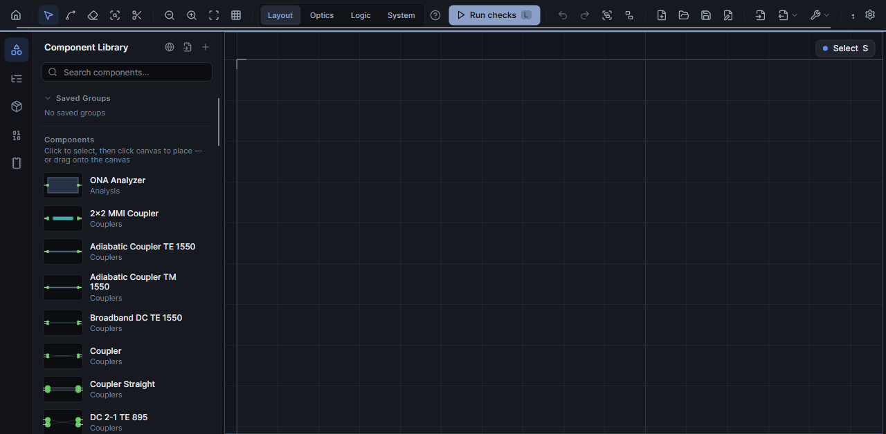
One design, four views
Workspaces that know what you're doing
Layout, Optics, Logic and System look at the same design. Each brings its own accent colour, its own Run button and the left panel and analysis tabs you need right now — nothing else.
- Layout — component library, routing tools; Run checks the design.
- Optics — sources & detectors; Run toggles the live simulation.
- Logic — gates and starter circuits; Run builds the logic network.
- System — chiplets and their links, with the loss across each link.
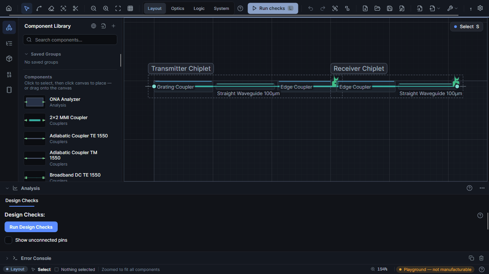
If you simulate — and then measure
Simulation lives on the canvas
Turn the simulation on once. Every edit after that — a new wire, a moved part, a parameter — re-runs it in the background and repaints the power flow.
- Live CW power flow — dB and percent on every waveguide, updated as you edit.
- Transient & Eye / BER — IFFT of the circuit S-parameters, PRBS eye heat maps with Q-factor and BER, CSV export.
- ONA sweeps & spectra — transmission over wavelength per output pin.
- FDTD with Meep — recompute a component's S-matrix from its geometry in Docker.
- Measured data in — load S-matrices from file onto the components you drew.
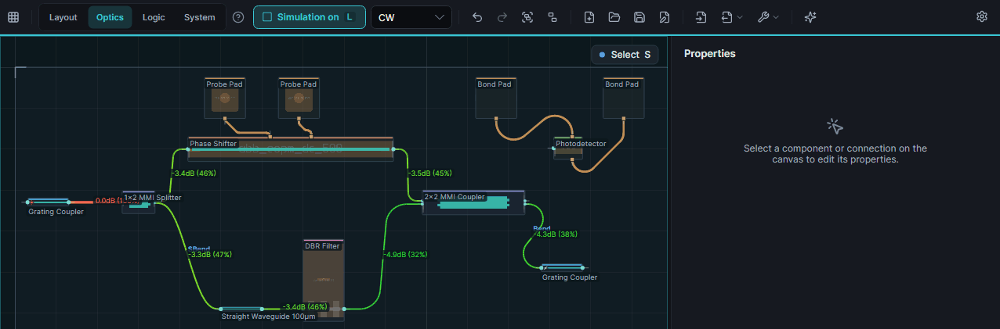
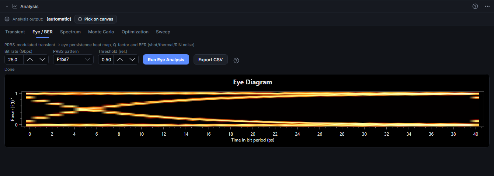
If you route by hand
Routing that answers to you
The router suggests, you decide. Cut a wire to let another one cross, slide a crossing along its wire — only the pieces that have to move are re-routed.
- Cut tool — cut any wire, even one coming out of a crossing; a real PDK crossing drops in and the halves keep their geometry.
- Slide crossings — drag along an axis; Shift frees the drag.
- Per-connection styles — SBend, Bend, custom radii with in-canvas handles; freeze routes you've tuned.
- Process-aware — routing honours your process's minimum bend radius.
- Metal routing & diagonal 45°opt-in — DC traces next to the optical layer, denser layouts.
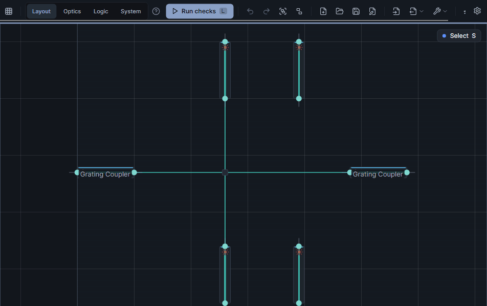
If you compute with light
From parts to a logic gate
Select a few photonic parts and press Make gate. Lunima groups them, simulates every input combination and proposes the threshold that turns the optical powers into a truth table.
- Make gate — pin roles, real simulation, suggested threshold and margin in dB.
- Gate library — save gates and drag them into bigger circuits: adders, latches, RAM, an ALU.
- Logic network — toggle inputs and watch every gate output live, or step the clock.
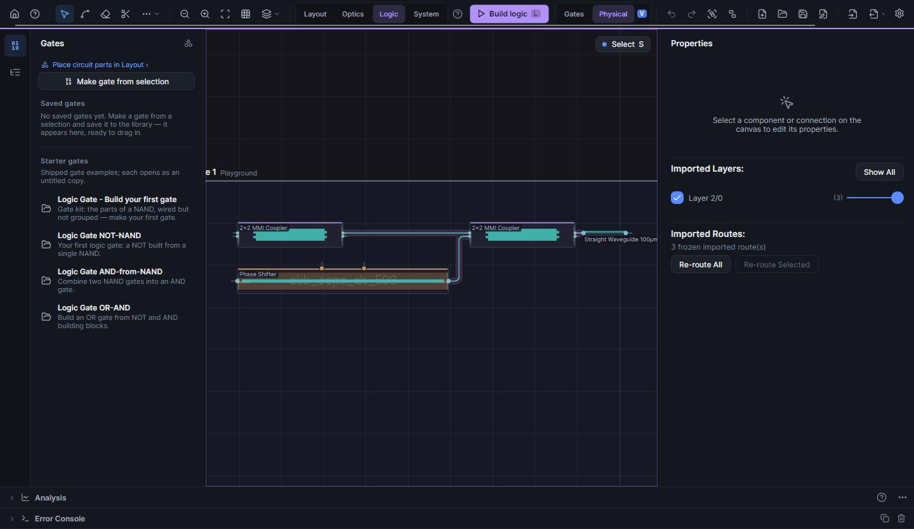
If one die isn't enough
Chiplets, linked by light
Put two dies side by side and butt-couple them through edge couplers. Knock one out of alignment and the live simulation shows the link losing light — Design Checks name the offset, one click snaps it back.
- Dies with their own process — the System workspace lists every chiplet with its process.
- Link loss you can see — every edge-coupler link carries its loss in dB.
- Align chiplet — a lateral offset is a design-check finding with a one-click fix.
- Logic across dies — gate networks follow the light through edge-coupler links.
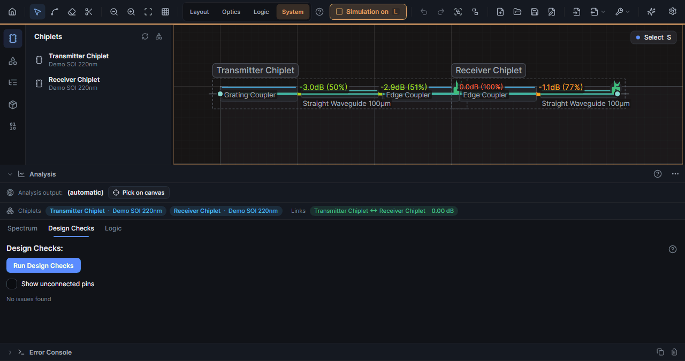
If you work with an AI agent
Claude can repair your design
Lunima's agent bridge speaks MCP. An agent such as Claude inspects the open design, tries fixes in a sandbox and applies the one that works — through the same undoable commands you use.
- Inspect — design summary, components, connections, routing timings, screenshots.
- Edit — move and delete components, reroute, undo.
- Repair — cut candidates, crossing slides, segment shifts, sandboxed fix suggestions.
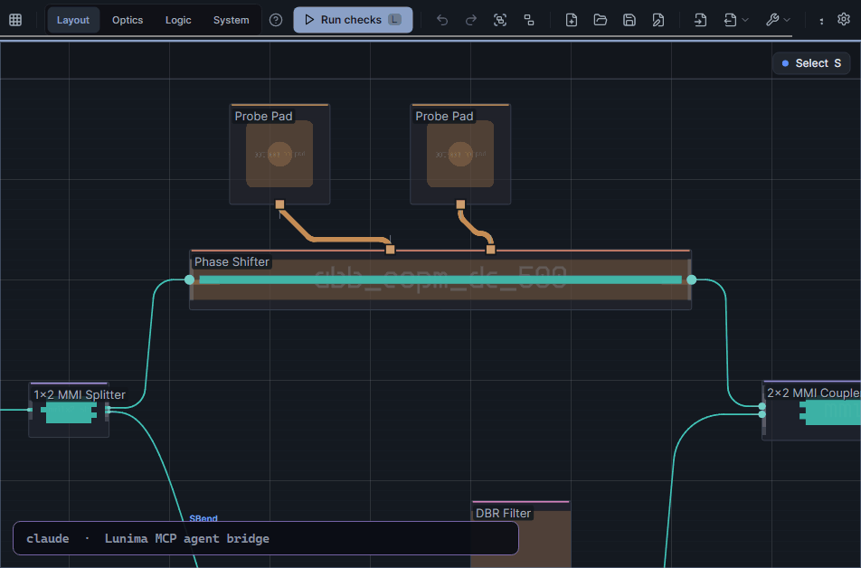
If you run your own fab
Your PDK is a first-class citizen
Custom PDKs aren't an expert backdoor. Define components in gdsfactory or nazca Python, preview the geometry, compute the S-matrix with Meep — and keep your process data (it's entered per process, never shipped).
- One editor for everything — code, geometry preview and S-matrix side by side.
- Fork-on-save — editing a bundled component forks it into your PDK; restore the original any time.
- Trash, not dread — deleted PDKs and components restore for 30 days.
- Process editor — layer stack, cross-sections with bend radii the router enforces, your own refractive indices.
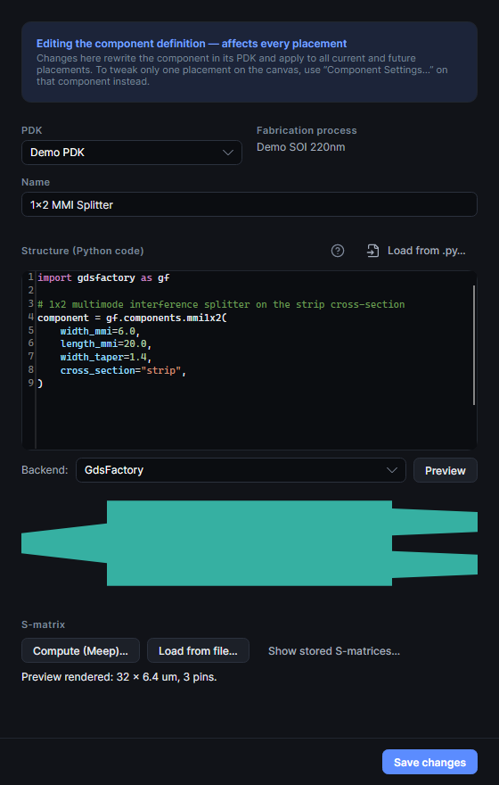
If you tape out
Built to tape out
Layouts target real foundry processes from the first component you place — so what leaves the Export menu is a GDS a fab can actually make.
- Real foundry PDKs, bundled — CornerStone SiN 300 nm and the open SiEPIC EBeam SOI 220 nm, next to the Demo PDK.
- Calibrated against the cells — the offset editor renders the PDK's actual GDS polygons and verifies every pin.
- One design, one process — free mixing lives in a Playground the status bar labels not manufacturable.
- GDS via gdsfactory or nazca — plus SAX, PhotonTorch, Verilog-A and YAML netlists from the same menu.
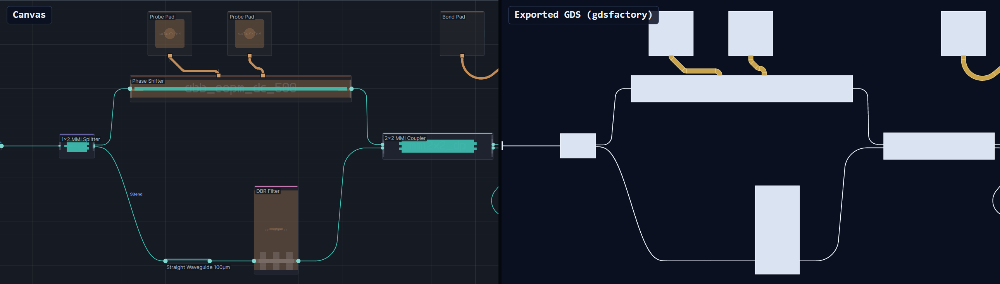
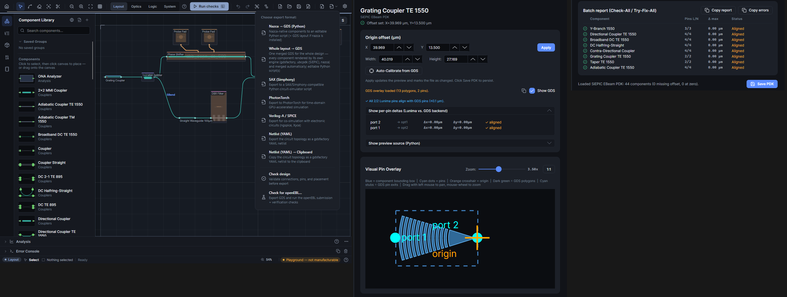
If you don't trust black boxes
Open by design
Every stage has an escape hatch. Your circuit is a graph you can export, your PDK is JSON you can diff, and nothing in the pipeline requires you to stay.
- gdsfactory YAML netlists — instances, placements, connections and ports, ready for SAX.
- Open JSON PDKs — documented, human-readable, version-controllable.
- Five languages — English, Deutsch, Español, 简体中文, 日本語; live-switchable.
- Autorouting is optional — style it, freeze it, or route yourself.
Get Lunima
Download v0.18.2
Free and MIT-licensed. Once installed, Lunima updates itself in place — download, swap, relaunch — on all three platforms.
Windows
x64
Lunima-Setup-0.18.2.msi Lunima-0.18.2-win-x64.zipInstaller, or portable zip — unzip and run.
macOS
Apple Silicon · Intel
Lunima-0.18.2-osx-arm64.dmg Lunima-0.18.2-osx-x64.dmgUnsigned build — see the first-launch note below.
macOS first launch: xattr -dr com.apple.quarantine /Applications/Lunima.app
All versions: github.com/aignermax/Lunima/releases